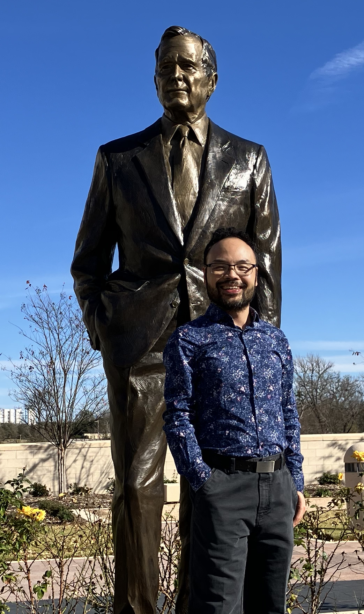

Howdy! I'm Steven, a Ph.D. candidate in Political Science at the Bush School of Government & Public Service at Texas A&M University. My dissertation, Contesting the Liberal Order? Chinese Economic Statecraft, Alternative Institutions, and the Diffusion of Governance Norms, examines how China's rise reshapes international institutions, norms, and security relationships across the Indo-Pacific and Africa. My research interests span economic statecraft and great power rivalry, development finance and the international order, and the political economy of U.S.–China relations.
I hold an M.A. in International Economics and China Studies (Economic Policy specialization) from Johns Hopkins SAIS, an M.A. in Economics from Kyoto University, and a B.A. in Political Science and an M.A. in International Relations from Peking University. My published work includes an article in the SAIS China Studies Review on Chinese trade retaliation in territorial disputes and an essay on multilateralism for the Bretton Woods Committee.
Before my doctoral training, I spent eight years at the Foreign Affairs Committee of China's National People's Congress, supporting congressional diplomacy and treaty-related affairs. That role gave me firsthand exposure to how China's legislative bureaucracy interacts with its trade, technology, and security ministries. Two immersive years in Japan enhanced my understanding of its academic and social contexts. Moreover, my experience working for a South Korean multinational corporation for two years gave me knowledge of the Korean economy and culture.
My recent honors include the International Policy Scholars Consortium and Network at the SAIS Kissinger Center, the Foreign Policy Impact Summer Institute at Colorado State University, the Humane Studies Fellowship, and the Henry Owen Memorial Award (second place) from the Bretton Woods Committee. In 2026 I am organizing a panel on "Economic Statecraft and Rising Power Foreign Policy" at the APSA Annual Meeting. My research has also received support from the Cato Institute, the Carnegie Corporation of New York, the Northeast Asia Economic Forum, the Volkswagen Foundation, and the Japan International Cooperation Agency. For a more detailed overview of my work, please take a moment to view my CV here.